引言
序列（sequence）
Slot Filling（槽填充）任务
网络记忆能力
延时神经网络（Time Delay Neural Network TDNN）：建立一个额外的延时单元，用来存储历史信息（可以包括输入、输出、隐状态等）。
ht(l)=f(ht(l−1),ht−1(l−1),⋯,ht−K(l−1))
自回归模型（ Autoregressive Model AR）：用变量的历史信息来预测自己。
yt=w0+k=1∑Kwkyt−k+ϵt
有外部输入的非线性自回归模型（Nonlinear Autoregressive with Exogenous Inputs Model NARX）：自回归模型的拓展，每个时刻都有一个外部输入。
yt=f(xt,xt−1,⋯,xt−Kx,yt−1,yt−2,⋯,yt−Ky)
循环神经网络
循环神经网络（Recurrent Neural Network，RNN）：由输入串、一个隐藏层和一个输出层组成。
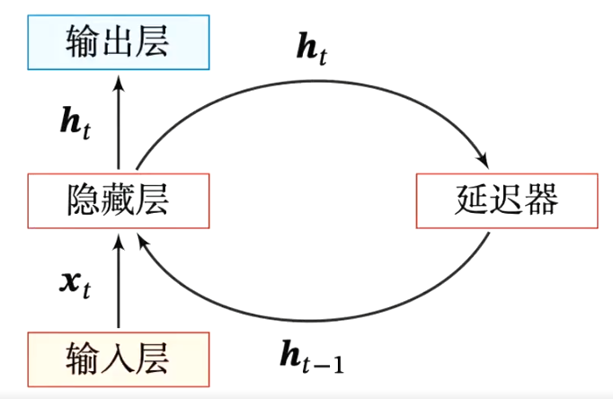
- 输入序列：x1:T=(x1,x2,…,xt,…,xT)
- 更新隐藏层的活性值：ht=f(ht−1,xt)
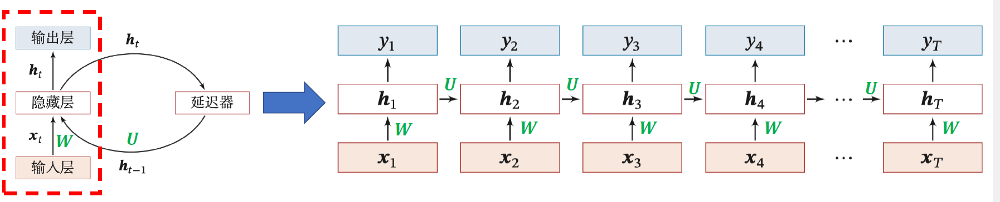
ztht=Uht−1+Wxt+b=f(zt)}ht=f(Uht−1+Wxt+b)
h0 初始化为 0 向量
- 基础的神经网络只在层与层之间建立权连接
- 循环神经网络不同之处在于层内部的神经元在时间维度也建立权连接
隐状态 ht ：
- 进一步处理得到每个时间步的输出 yt
- 下一个时间步的输入
举例：假如需要判断用户的说话意图（问天气、问时间、设置闹钟……），用户说了一句“What time is it?"。
- 分词：
What time is it ?
-
“What” 作为 RNN 的输入，得到输出 O1
-
"time"作为 RNN 的输入（基于第 2 步），得到输出 O2
-
"is"作为 RNN 的输入（基于第 3 步），得到输出 O3
-
"it"作为 RNN 的输入（基于第 4 步），得到输出 O4
-
"?"作为 RNN 的输入（基于第 5 步），得到输出 O5
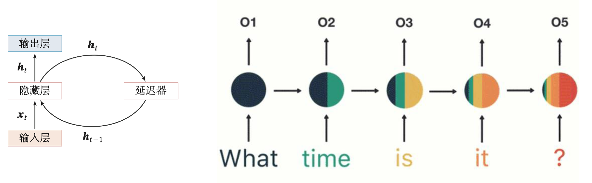
短期记忆问题
RNN 序列模型应用时的几种形式：
- many to one
- one to many
- many to many 同步
- many to many 异步
Many to One 模型
-
输入为一串文字，输出为分类类别（新闻分类）
-
输入一整篇文章，输出文章作者的情绪（情感分类）
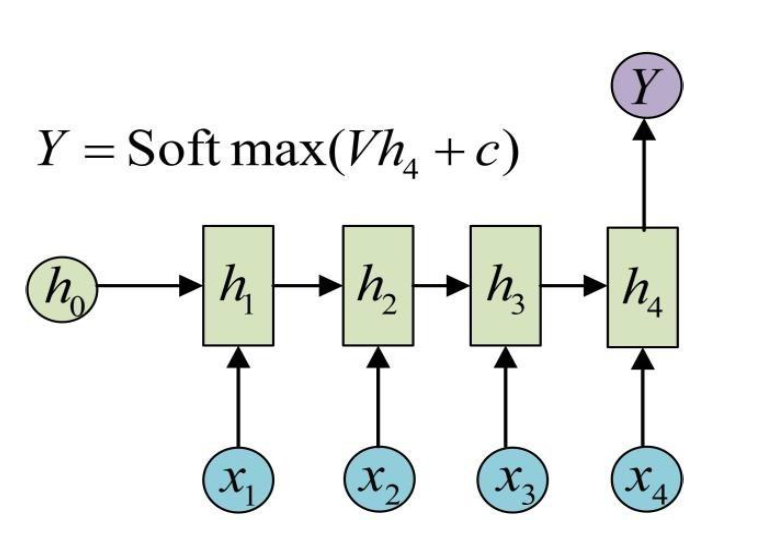
One to Many 模型
- 输入为一张图片，输出为图片的文字描述
- 输入为一种类型，输出为一系列的音符（即一首曲子）
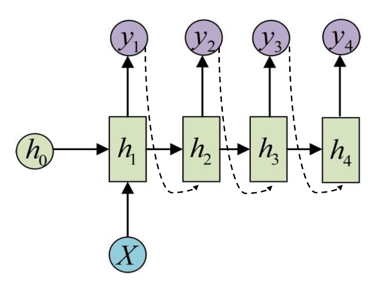
Many to Many 模型（同步）
输入和输出的序列个数相同，如输入为视频序列，输出为每一帧对应的标签；词性标注。
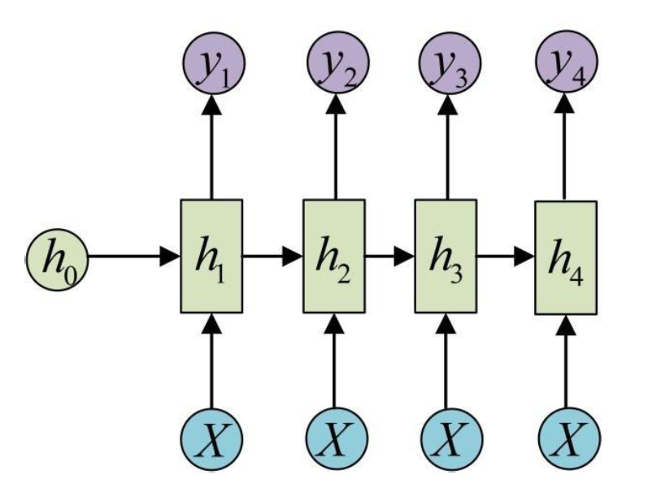
Many to Many 模型（异步）
输入和输出的序列个数不同，如机器翻译中，源语言和目标语言的句子往往并没有相同的长度。
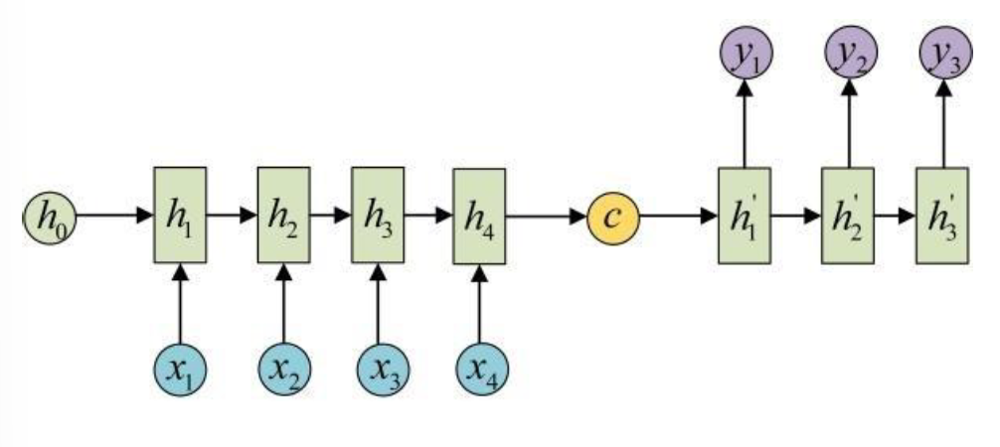
总结
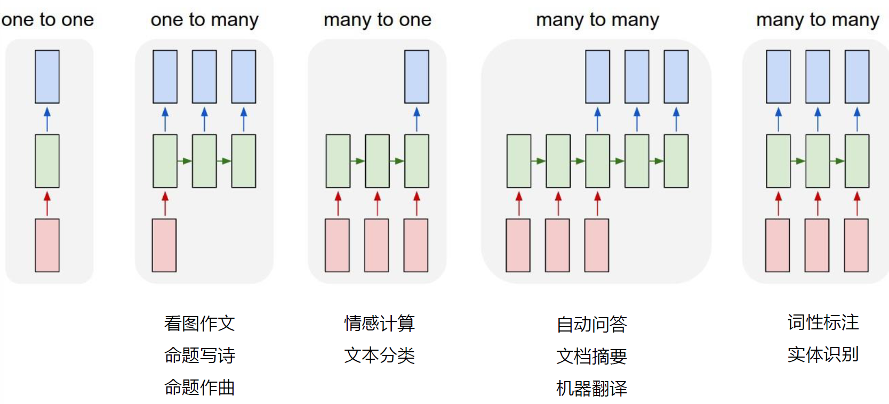
双向循环神经网络
双向循环神经网络（ Bidirectional Recurrent Neural Network Bi RNN ）：由两层循环神经网络组成，输入相同，信息传递的方向不同。
ht(1)ht(2)ht=f(U(1)ht−1(1)+W(1)xt+b(1))=f(U(2)ht+1(2)+W(2)xt+b(2))=ht(1)⊕ht(2)
正向计算和反向计算不共享权重。
循环神经网络的训练
循环神经网络的参数可以通过梯度下降方法来进行学习沿着需要优化的参数的负梯度方向不断寻找更优的点直至收敛。
以随机梯度下降法为例：对于任意一个 many to many 同步的样本。
- 输入：x1:T=(x1,⋯,xT)
- 输出：y1:T=(y1,⋯,yT)
- 任意时刻的损失函数：Lt=L(yt,g(ht))
- 整个序列的损失函数：L=∑t=1TLt
整个序列的损失函数关于参数的梯度：∂U∂L=∑t=1T∂U∂Lt
ztht=Uht−1+Wxt+b=f(zt)}ht=f(Uht−1+Wxt+b)
BPTT 算法：
定义误差项 δt,k=∂zk∂Lt：第 t 时刻的损失对第 k 时刻隐藏神经层的净输入 zk 的导数
δt,k=∂zk∂Lt=∂zk∂hk∂hk∂zk+1∂zk+1∂Lt=diag(f′(zk))U⊤δt,k+1=τ=k∏t−1(diag(f′(zτ))U⊤)δt,t
∂U∂Lt=k=1∑tδt,khk−1⊤
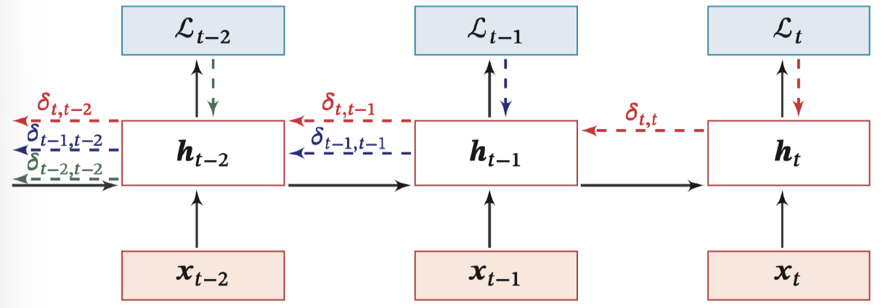
即：
δt,k≅γt−kδt,t
> 当 γ>1，t−k→∞ ，间隔比较大时，会产生梯度爆炸。
> 当 γ<1，t−k→∞ ，间隔比较大时，会产生梯度消失。
长程依赖问题
RNN 梯度消失：∂U∂Lt=∑k=1tδt,khk−1⊤，权重数组 U 的最终梯度是各个时刻的梯度之和。
RNN 总的梯度是不会消失的 。 其梯度消失的真正含义是：梯度被近距离梯度主导，导致模型难以学习远距离的依赖关系。这也是原始 RNN 无法处理长距离依赖的原因 。
梯度爆炸：收到 NaN 错误；设置一个梯度阈值，当梯度超过这个阈值时直接截取。
梯度消失：
- 合理的初始化权重值：初始化权重，使每个神经元尽可能不要取极大或极小值，以躲开梯度消失的区域。
- 使用 ReLU 代替 Logistic 和 Tanh 作为激活函数。
- 使用其他结构的 RNNs：
- 长短时记忆网络（LTSM）
- Gated Recurrent Unit（GRU）
长短期记忆网络（LSTM）
Long Short Term Memory network（LSTM）：一种特殊的 RNN 网络，该网络设计出来是为了解决长程依赖问题 。除了原始的隐状态 ht 外，增加了一个新的状态 ct ，称为单元/细胞状态（cell state）， 让它来保存长期的状态。
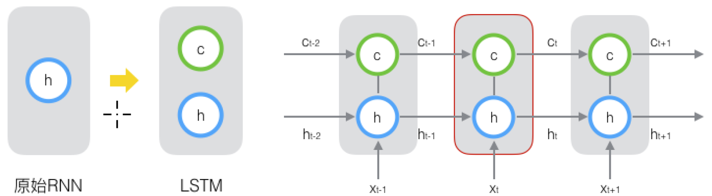
标准 RNN 按时间维度展开：
ht=f(Uht−1+Wxt+b)
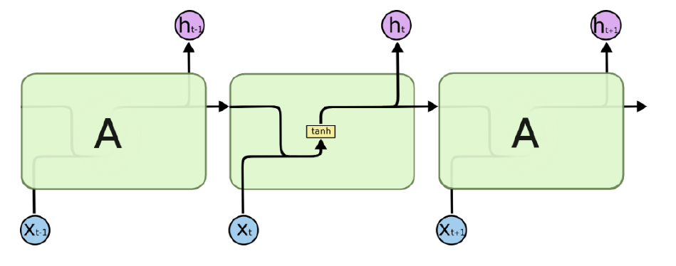
LSTM 沿时间维度展开：
ct=ft⊙ct−1+it⊙c~tht=ot⊙tanh(ct)
除了 ht 在随时间流动，单元状态 ct 也在随时间流动，单元状态 ct 就代表着长期记忆。
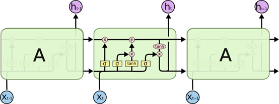
细胞状态
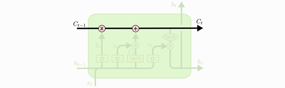
门控开关
LSTM 的关键是如何控制细胞状态 ct∈RD 和隐状态 ht∈RD ：
使用三个控制门开关包括：
- ft∈[0,1]D：负责如何继续保存细胞状态 Ct−1∈RD（保存长期记忆）
- it∈[0,1]D：负责如何把即时信息输入到细胞状态 Ct∈RD（添加新的记忆）
- ot∈[0,1]D：负责控制如何把细胞状态 Ct∈RD用于当前输出隐状态 ht∈RD（使用记忆内容）
门控机制
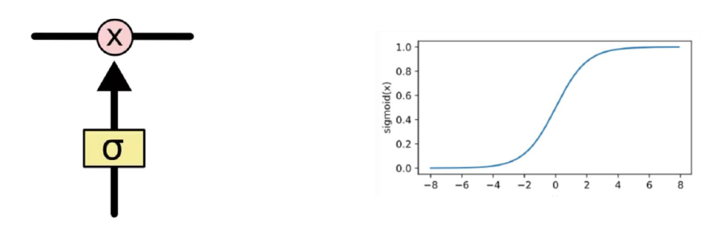
使用两个门来控制单元状态 C：
- 遗忘门（Forget Gate）：决定上一时刻的单元状态 ct−1 有多少保留到当前时刻的单元状态 ct
- 输入门（Input Gate）：决定了当前时刻网络的输入 [ht−1,xt] 有多少添加到当前时刻的单元状态 ct
输出门（Output Gate）：控制当前时刻的单元状态 ct 有多少输出到当前时刻网络的输出 ht
遗忘门——记忆保留
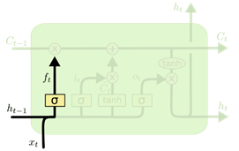
ft=σ(Wfxt+Ufht−1+bf)
遗忘门 ft：自适应地决定网络记住多少前一步的内容，同时受到前一步的隐状态和当前时间步新的输入的影响。
输入门——记忆增加
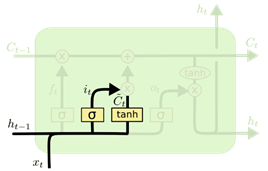
c~t=tanh(Wcxt+Ucht−1+bc)it=σ(Wixt+Uiht−1+bi)
候选状态 c~t：记录到当前时刻的所有信息。
细胞状态更新
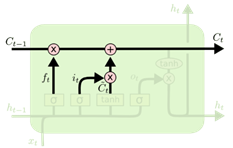
ct=ft⊙ct−1+it⊙c~t
输入门 it：自适应地决定网络要将多少新的信息存入细胞状态，同时受到前一步的隐状态和当前时间步新的输入的影响。
- 遗忘门控制：保存很久之前的内容
- 输入门控制：避免当前无关紧要的内容
输出门——记忆使用
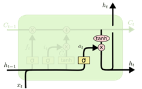
ot=σ(Woxt+Uoht−1+bo)ht=ot⊙tanh(ct)
输出门 ot：自适应地决定网络要将细胞状态的多少内容作为输出。同时受到前一步的隐状态和当前时间步新的输入的影响。
小结
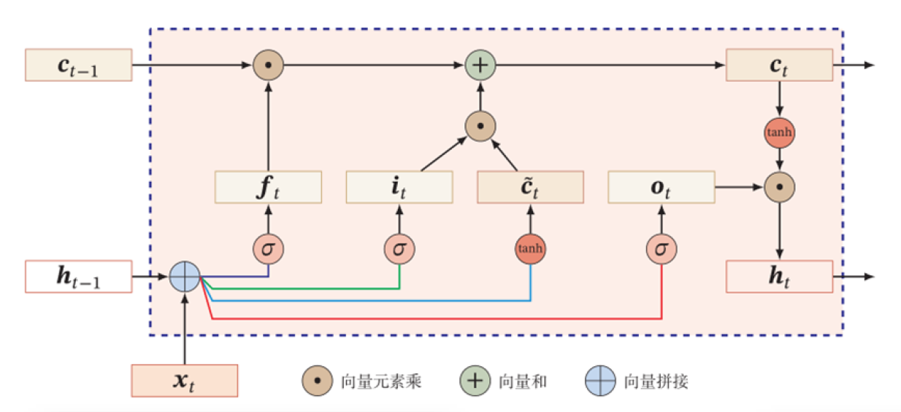
- 遗忘门 ft：ft=σ(Wfxt+Ufht−1+bf)
- 输入门 it：it=σ(Wixt+Uiht−1+bi)
- 输出门 ot：ot=σ(Woxt+Uoht−1+bo)
- 候选细胞状态 c~t：c~t=tanh(Wcxt+Ucht−1+bc)
t 时刻的中间输出：
- ct=ft⊙ct−1+it⊙c~t
- ht=ot⊙tanh(ct)
门控循环神经网络（GRU）
GRU（Gate Recurrent Unit）：一种 比 RNN 可以更有效处理长期依赖，比 LSTM 结构更简单的循环神经网络。
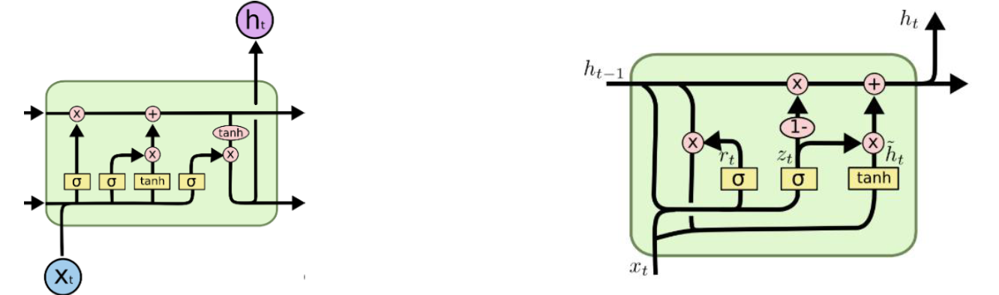
在 GRU 中只有两个门：更新门和重置门，将单元状态和输出合并为一个状态。
重置门 r（Reset Gate）：控制候选状态的计算是否依赖于上一时刻的状态。
更新门 z（Update Gate） ：控制当前状态需要从历史状态中保留多少信息（不经过非线性变换），以及需要从候选状态中接受多少新信息；
小结
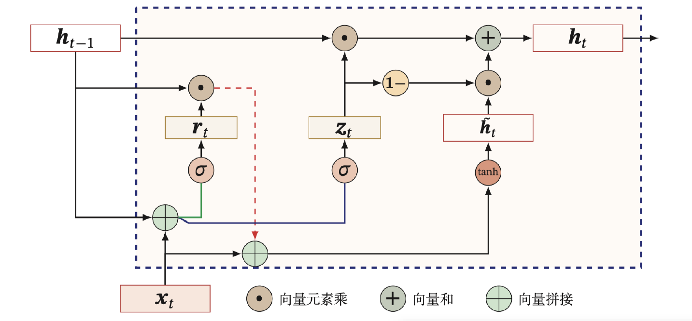
- 重置门 rt：rt=σ(Wrxt+Urht−1+br)
- 更新门 zt：zt=σ(Wzxt+Uzht−1+bz)
t 时刻的中间输出：
- h~t=tanh(Whxt+Uh(rt⊙ht−1)+bh)
- ht=zt⊙ht−1+(1−zt)⊙h~t
深层循环神经网络
深度：定义为网络中信息传递路径长度 ，循环神经网络是既深又浅的网络。
- 深网络 ：把循环网络按时间展开，长时间间隔的状态之间的路径很长
- 浅网络 ：同一时刻网络输入到输出之间的路径 xt→yt 非常浅
增加加循环神经网络的深度可以增强循环神经网络的能力：增加同一时刻网络输入到输出的路径 xt→yt
- 增加隐状态到输出的路径深度：ht→yt
- 增加输入到隐状态的路径深度：xt→ht
堆叠循环神经网络（Stacked Recurrent Neural Network，SRNN）：即把多个循环网络堆叠起来。
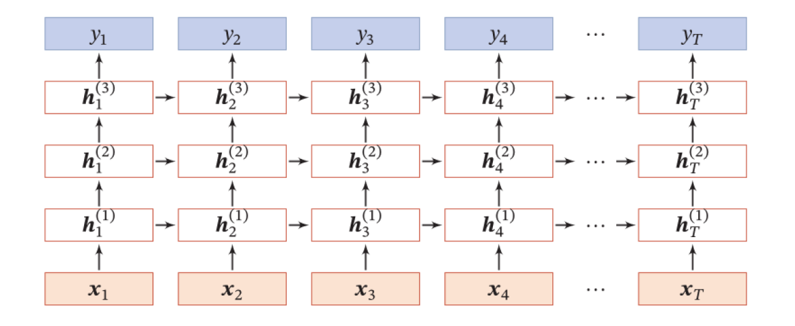
ht(l)=f(U(l)ht−1(l)+W(l)ht(l−1)+b(l))ht(0)=xt
序列数据处理方法讨论
- 循环神经网络：为了捕获数据的长期依赖，引入门控机制。
- 一维卷积神经网络：
- Causal Convolution
- Dilated Convolution
- 注意力机制
- RNN + attention
- only attention—Transformer 。
一维卷积神经网络（CNN --> TCN）
| 因果卷积 |
膨胀卷积 |
| 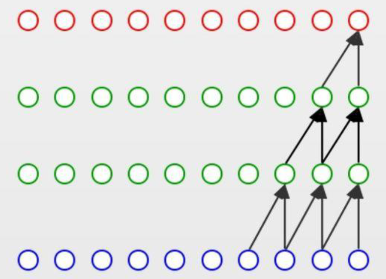 |
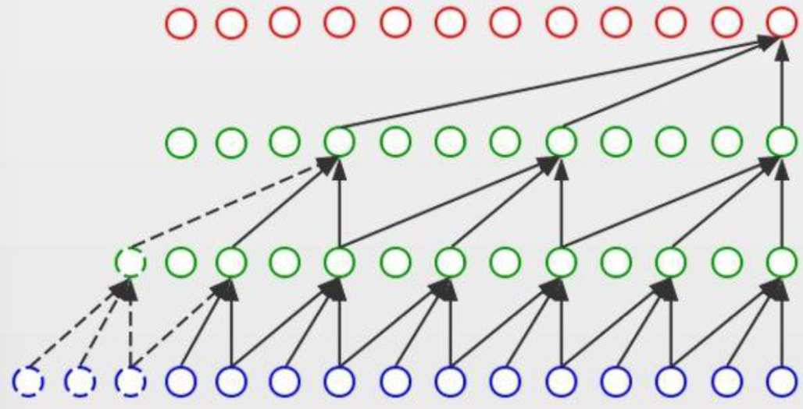 |
| 强调前后数据的因果关系 |
强调数据的长期依赖关系 |
注意力机制
RNN + attention：自适应地为不同时间步的数据分配不同的权重。
only attention, Transformer：一种直接将任意两个时间步的信息关联起来的方式。
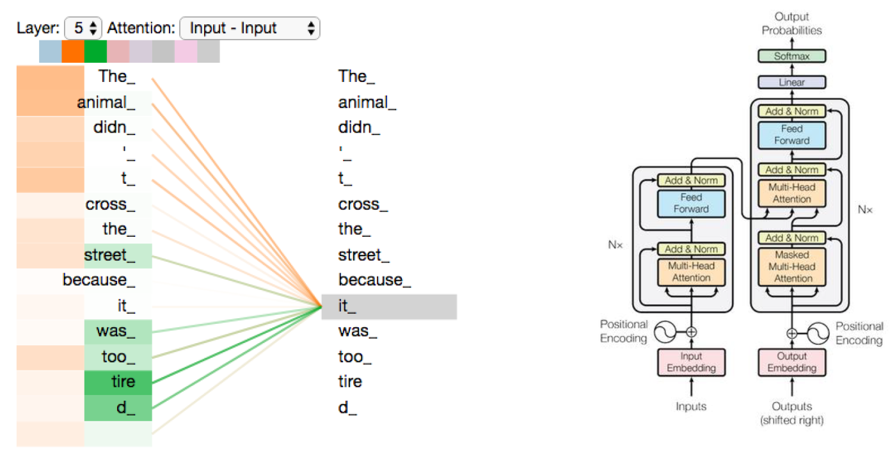
几种序列处理方法对比
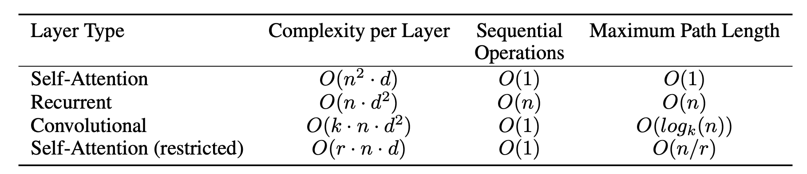